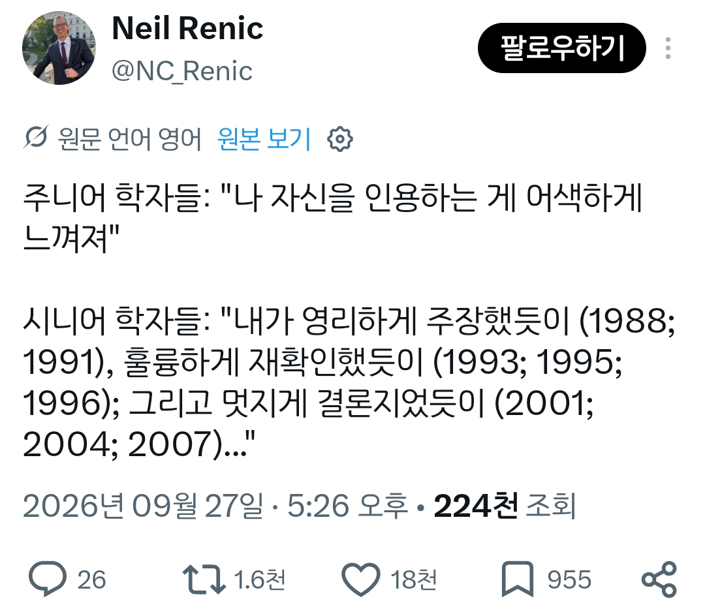

자신의 논문을 인용할때 짬에 따른 차이
댓글
했제? 그랬제?
(학문) 팔라 했제?
박사과정이
이제 됐냐 씨발새끼들아 이제 좀 말귀좀 알아 쳐먹냐!같은거라고 하던데
"내말이 맞음"을 장황하게 설명하는 것
저 년도에 교수 임용된 사람은 그럴 수도 있었겠는데 요즘 임용된 사람중에 저러는 미친놈은 없지..
리뷰 논문에 저자가 Kim이고 우리가 확인해봤는데~(Kim et al, 1982, 1998, 2014, 2022)면 신뢰도 존나 올라가긴함
사실상 나보다 이거 오래 고민한 사람 없다고 선언한 수준이라 ㅋㅋ
이의 있으면 바로 대학원생행…
10~15년전엔 저렇게 쓰기도 했는데 요샌 그냥 자체인용 잘 안하고 남들도 비슷한 의견을 주장한다, 이게 트렌드다 이런식으로 많이 써..
논문이라는게 결국 검증결과를 근거로 주장에 힘을 더해야 하는데 자기 주장만 들고와서 펼쳐놓는다? 저자가 세계적 석학이 아니라면 좀 부끄러운 짓이야
그래서 말하는게 리뷰논문… 애당초 리뷰 저널에 리뷰논문 쓸 정도면 그 분야에 한정해서 이미 세계적인 석학이고 인용할라쳐도 페이퍼 대다수가 제자들이나 연구동료들이라 이미 공저 들어가는데 크게 의미 있는진 모르겠음.
내가 공학쪽이 아니고 자연계쪽이라 더 그럴진 모르겠는데, 내 분야 한정해선 리뷰논문은 보통 은퇴했거나 그 즈음되서 연구인생 정리할 때 써서 그럴진 모르겠다. 어짜피 노친네들 오늘내일 한다고 실적도 의미 없겠다 사실상 업적작 느낌이라 다들 존나 자랑스러워함. 분야마다 다른거니 뭐 어쩔수 없는거기도 하고 내 분야가 크게 돈 안되는 분야라 그런가 다들 자존심으로 먹고 사는거 같다.
물구나무를 서서 봐도 자명하게 밝혀지듯이
누가 이렇게 기똥찬 생각을 했나 확인해보니 역시나 나였듯이
모두가 못마땅하지만 딱히 아니라고 할 수 없어 마지못해 인정했듯이
ㅋㅋㅋㅋㅋㅋㅋ
재능있어
?? 아 심심한데 누가 들어와서 한따까리 해줬으면 좋겠다
대놓고 이러지 않고
이 논문에서 완벽하게 증명됐듯이 (1저자 본인)
이런식으로 쓰는 사람들도있더라
뭐 대체 어떤 학계길래 논문에 저런 표현을 씀.....?
"멋지게" "훌륭하게" "영리하게".....?
드립을 못 받아들이는 사람 발생
표현만 다르지 사실상 동의어임 ㅋㅋ
"이전 연구에 따르면"을 말하면서 자가인용하는거 보고 그냥 드립으로 과장한거지
요즘 개드립에 1페이지를 넘어 1글에 1댓씩 이런애들 넘쳐나는데 대체 뭐가 문제냐?
내가 1저자는 20여편 밖에 안되지만 저래하지는 못하겠다 그냥 인트로에 선행된 연구에 넣어놓지.
ㄹㅇㅋㅋ
그중에 sci는 몇개임?
내가 말 했제?